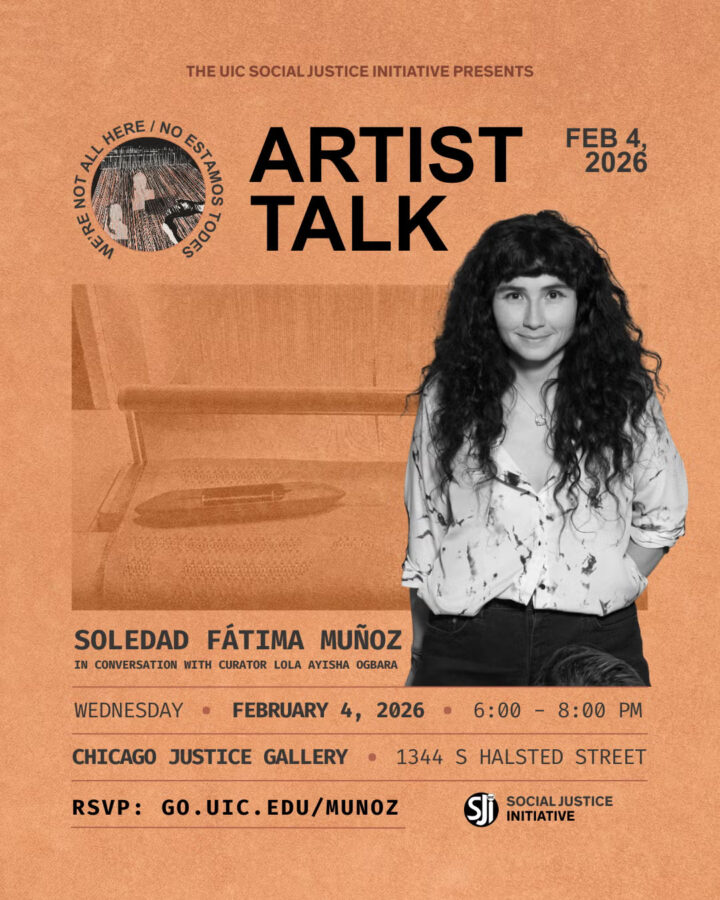

Artist Talk: Soledad Fátima Muñoz
Join the Social Justice Initiative for an intimate conversation with artist Soledad Fátima Muñoz as she discusses her solo exhibition, We’re Not All Here / No Estamos Todes, confronting the violence of state-sponsored disappearance and abandonment.
Through sound, installation, and poetic disruption, Muñoz explores the fragile tension between absence and presence, memory and forgetting, resistance and erasure. In this talk, she will delve into the personal and political currents that shape her practice, and the urgency of creating spaces for collective remembrance and dissent.
RSVP for this event at go.uic.edu/Munoz
Guest Speakers *Via Zoom*
Soledad Fátima Muñoz, exhibiting artist, is a Canadian-Chilean artist and researcher whose practice centers on the political and historical dimensions of textiles. Raised in Rancagua, Chile, she creates large-scale weavings—often made with copper wire—that explore memory, resistance, and material storytelling. Muñoz holds an MFA from the School of the Art Institute of Chicago and a BFA from Emily Carr University. She has received several awards, including the City of Vancouver Emerging Artist Award, the New Artists Society Merit Scholarship, and the Textile Society of America’s Student Award.
Lola Ayisha Ogbara, exhibition curator and moderator, is a Nigerian American conceptual artist and cultural worker from Chicago, Illinois. She earned a BA from Columbia College Chicago and an MFA from Washington University in St. Louis. Former Curator for the South Side Community Art Center, she currently serves as SJI’s Program Director and Gallery Manager. Ogbara’s curatorial and community arts-based practice serves underrepresented artists and is committed to fostering equity and integrity in the art world.